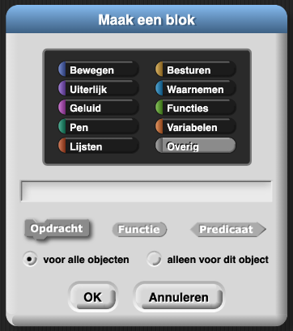
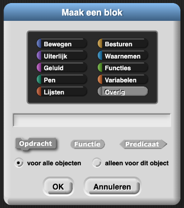

Je eigen blok maken
Op deze pagina, ga je een blok maken dat ervoor
zorgt
dat het programma wat meer op een gesprek lijkt. Dit ga je doen door zinnen als "Ik hoorde het," "Wat
maakt dat uit!" of "Hee, raad eens" toe te voegen, in plaats van altijd "Oh, maar."
blok maken dat ervoor
zorgt
dat het programma wat meer op een gesprek lijkt. Dit ga je doen door zinnen als "Ik hoorde het," "Wat
maakt dat uit!" of "Hee, raad eens" toe te voegen, in plaats van altijd "Oh, maar."

- Open het H1L2-Kletspraat-project.
- Maak een blok.
De instructies staan hieronder.
Een Nieuw Blok Maken
- Klik op
 in het Variabelenpalet (of
ctrl-klik/klik met rechtermuisknop), op een lege plek in het werkblad
en kies 'maak een blok...'.
in het Variabelenpalet (of
ctrl-klik/klik met rechtermuisknop), op een lege plek in het werkblad
en kies 'maak een blok...'. - Kies Lijsten, met de kleur rood.
- Typ in de tekstbox de titel van je blok: kletsantwoord.
- Selecteer de vorm: Opdracht - Functie - Predicaat.
Kies voor dit blok de ovale functie-vorm, want je wilt dat het blok een waarde (het antwoord) rapporteert naar een ander blok. Klik op OK. - Het blok
is nu toegevoegd links onderaan je lijst van variabelen.

Blokbouw-beginselen
- In Snap! heeft elk blok een kleurcategorie, ook wel bekend als het palet. Grijs ('Overig') is de standaard.
- Let op: Bewegen en Waarnemen zijn donker- en lichtblauw, het verschil is subtiel.
- Een blok heeft een type (te herkennen aan de vorm van het blok), een naam, en een script dat het gedrag definieert.
 
Het script van het blok bouwen
- Sleep de blokken die je nodig hebt naar het script-werkblad. Voor dit blok, gebruik je
 en
en  uit het Variabelen-palet.
uit het Variabelen-palet.
- Klik de blokken aan elkaar. De structuur van de code lijkt op
wie,doet_wat, enwie2. - Vul alle invoeren in.
- Klik op het pijltje naar beneden in
itemom voor dit project '1' te veranderen in willekeurig. - Vul dan de
lijstmet zinnen.
- Klik op het pijltje naar beneden in
- Klik OK wanneer je tevreden bent.
 Wissel wie er achter het toetsenbord zit.
Wissel wie er achter het toetsenbord zit.
- Rapporteur (functie): blokken met een ovale vorm, zoals
 noemt Snap! een rapporteur. In veel andere programmeertalen wordt dit een functie genoemd.
noemt Snap! een rapporteur. In veel andere programmeertalen wordt dit een functie genoemd.
- Procedure: blokken met de vorm van een puzzelstukje, zoals
 noemt Snap! een commando. Maar in andere programmeertalen wordt
dit soms een procedure genoemd.
noemt Snap! een commando. Maar in andere programmeertalen wordt
dit soms een procedure genoemd.
Programmeertalen zijn hier niet heel consistent in. Sommigen noemen beide functie en anderen
noemen beide procedure. En wiskundigen gebruiken het woord 'functie' op een net andere manier dan
programmeurs. Maak je geen zorgen als je tijdens wiskunde iets anders hoort, dan wat je hier leest.
Debugging
- Test je speciaal gemaakte
kletsantwoordblok door er meerdere keren op te klikken. Het zou zich zoals dewie,doet_watenwie2blokken moeten gedragen. - Debug alle problemen voordat je verder gaat.
- Gebruik je nieuwe blok. Pas
kletspraat2aan, en voegkletsantwoordin op de plaats van de tekst "Oh, maar...."
- Test en debug
kletspraat2ook. - Test het hele programma door meerdere keren op script D te klikken en los alle bugs op die je tegenkomt.
 Vergeet niet je werk te bewaren.
Vergeet niet je werk te bewaren.
Als je er niet uitkomt, bekijk dan opnieuw hoe je een blok moet aanpassen in H1L2P2: Aanpassen en Debuggen.
Bewerk kletspraat en kletspraat2 zodat soms dingen gezegd
worden als "Hanna en Olivia", gebruikmakend van twee namen in de lijsten wie of
wie2.
- Je kunt code gebruiken zoals

om iets alleen af en toe te doen. Verander de 7 in een andere getal om de waarschijnlijkheid aan te passen. - Als je programma twee namen gebruikt, dan moet je werkwoord in het meervoud staan. Het is
immers "Hanna en Olivia lopen" en niet "Hanna en Olivia" loopt". Je kunt daarom twee versies
maken van
doet _watof je kunt een werkwoord datdoet_watrapporteert plus een paar regels gebruiken om het werkwoord zo in het meervoud te zetten. - Een voorbeeld van zo'n regel zou kunnen zijn: "Als het woord eindigt op x verander het dan in zz" om er een meervoudig werkwoord van te maken.
Deze paarse 'Een Stapje Verder'-secties bevatten moeilijkere opgaven die niet
verplicht zijn voor deze les. Als je vroeg klaar bent met alle andere opdrachten op de pagina,
probeer dan eerst deze sectie door te werken voordat je naar de volgende pagina gaat.